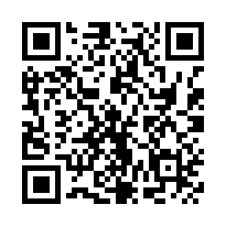

Fenerbahçe Maç Takvimi
Erkek A takım futbol ve basketbol maçları. Takvim her gün otomatik güncellenir; bir kez abone olmanız yeterli.
GitHub'da 0 takipçi · 1 yıldız
Takvime abone ol
- iPhone, iPad, Mac: Apple Takvim düğmesi takvimi doğrudan ekler.
- Android: Google Takvim uygulaması telefonda URL ile abone olmayı desteklemez; düğme, ekleme onayının yapıldığı Google Takvim web sayfasını açar. Telefonda açılmazsa tarayıcı menüsünden "Masaüstü sitesi"ni seçin ya da sayfayı bilgisayarda açın. Eklenen takvim telefonunuza kendiliğinden gelir.
- Outlook ve diğerleri: "URL ile takvim ekle" seçeneğine aşağıdaki bağlantıyı yapıştırın.
- .ics indir: maçları yalnızca bir kez ekler, sonradan güncellenmez.
Tüm maçlar
Fenerbahçe erkek futbol ve basketbol takımlarının maçları
.ics indirfenerbahce-all.icsFutbol
Fenerbahçe erkek futbol takımının maçları
.ics indirfenerbahce-football.icsBasketbol
Fenerbahçe erkek basketbol takımının maçları
.ics indirfenerbahce-basketball.icsSıradaki maçlar
- Salı 22.09.2026 · 20:00Fenerbahçe - Beşiktaş
- Cuma 25.09.2026 · 20:45Fenerbahçe - Virtus Bologna
- Pazar 27.09.2026 · 18:00Bahçeşehir Koleji - Fenerbahçe
- Salı 29.09.2026 · 20:45Fenerbahçe - Bayern Munich
- Cuma 02.10.2026 · 20:45Fenerbahçe - Dubai
- Pazar 04.10.2026 · 15:30Fenerbahçe - Biotekno Körfez Basket
- Perşembe 08.10.2026 · 21:15Panathinaikos - Fenerbahçe
- Cumartesi 10.10.2026 · 19:00Çaykur Rizespor - Fenerbahçe
- Cumartesi 10.10.2026 · 20:30Çayırova Belediyesi - Fenerbahçe
- Salı 13.10.2026 · 20:45Fenerbahçe - Zalgiris
Saati henüz açıklanmamış maçlar, yanlış bir gece yarısı saati yazılmasın diye tüm gün etkinliği olarak gösterilir; saat kesinleşince aynı etkinlik güncellenir.
Projeyi destekle
Takvim ücretsizdir ve öyle kalacak. Beğendiyseniz isteğe bağlı olarak USDT (Tether) ile destek olabilirsiniz; herhangi bir borsa ya da cüzdandan gönderebilirsiniz.

Coin: USDT (Tether)
Ağ: BNB Smart Chain (BSC / BEP-20)
0x315f79cb95f784c18387c3009798d1a617dac8b2
⚠ Yalnızca USDT'yi ve yalnızca BSC (BEP-20) ağı üzerinden gönderin. Başka bir ağdan ya da başka bir coin ile gönderilen tutarlar geri alınamaz.
Son kontrol: yükleniyor…
Kaynaklar: TFF, UEFA, EuroLeague Basketball ve TBF. Kaynak kod (GitHub)